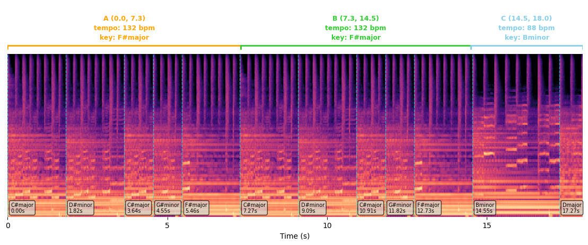

🎵 FiLMu Demo
audio1

Ground Truth:
Water pouring from a faucet and draining into a pipe while a young girl talks followed by a brush scrubbing then a person spitting.
LTU:
An woman is taking whike a water flowing in the background.